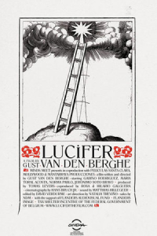

Топ 10 самых популярных кинофестивалей
- Berlinale
- Festival de Cannes
- Moscow International Film Festival
- Karlovy Vary International Film Festival
- Tallinn Black Nights Film Festival
- Locarno
- Montreal World Film Festival
- Venice Film Festival
- San Sebastian International Film Festival
- Warsaw Film Festival
Berlinale
О фестивале
Берлинский кинофестиваль, известный также как Берлинале, является одним из самых значимых и престижных кинофестивалей в мире. Берлинале ориентирован на прогрессивный геополитический кинематограф. Жюри уделяет особое внимание тому, чтобы в фестивальной программе были представлены фильмы со всего мира, в том числе фильмы стран бывшего «Восточного Блока». Берлинале является крупнейшим культурным событием, превращая Берлин в столицу кинематографа на две недели в феврале. Также Берлинале славится тем, что на нем открываются новые таланты. Этому посвящён ряд мероприятий, такие как, например Berlinale Talent Campus, куда ежегодно приезжают студенты со всего мира. От России ежегодно посещает Кампус несколько человек. Пройти селекцию на Берлинале — уже большой успех.Главные награды
- «Золотой медведь» — главный приз
- «Серебряный медведь» — гран-при жюри
- «Серебряный медведь» за лучшую режиссуру
- «Серебряный медведь» лучшей актрисе
- «Серебряный медведь» лучшему актёру
- «Серебряный медведь» за выдающийся вклад в искусство
- «Серебряный медведь» за лучшую музыку к фильму
- «Тедди»
- Премия Альфреда Бауэра (за открытие новых путей в киноискусстве)
- Приз за «Лучший дебют» (€ 50.000)
Немного истории
Фестиваль проводится с 1951 года. Его учредителями стали союзники по Второй мировой войне — США, Великобритания и Франция, под чьим управлением после войны находился Западный Берлин. В первый год существования этого кинофестиваля премии вручало немецкое жюри, а в 1952—1955 гг. проводились опросы публики и голосование в иностранных журналах. Победители определялись по категориям «лучший мюзикл», «лучшая драма», «лучший приключенческий фильм» и «лучшая комедия». С 1956 года решение о присуждении наград принимает международное жюри. Главным призом фестиваля является «Золотой медведь», присуждаемый за лучший фильм. «Серебряный медведь» присуждается в следующих номинациях: лучший режиссёр, лучший актёр, лучшая актриса, лучшая музыка и приз за выдающиеся достижения в области искусства. Премией Альфреда Бауэра отмечаются картины, «открывающие новые пути в киноискусстве». На «Берлинале-2006» впервые был вручен приз за лучший фильм-дебют. В 1956 году «Берлинале» получил официальный статус международного кинофестиваля. В конкурсной программе участвуют художественные полнометражные и короткометражные фильмы, созданные в течение 12 месяцев до начала фестиваля и не демонстрировавшиеся на других фестивалях. В рамках Берлинского киносмотра, помимо конкурсной программы, работают секции «Международный форум молодого кино», «Панорама», фестиваль фильмов для детей, а также европейский кинорынок. В Берлине в наибольшей мере, чем на других фестивалях представлены фильмы категории «не для всех» — так называемое «интеллектуальное кино». Фильмы Ингмара Бергмана, Микеланджело Антониони, режиссёров французской «новой волны» — Жан-Люка Годара, Клода Шаброля имели в разные годы большой успех на Берлинском кинофестивале. Как правило, на «Берлинале» показывают около 350 фильмов, а посещают этот киносмотр порядка 150 тысяч зрителей. В августе 2020 года организаторы Берлинского кинофестиваля объявили, что с 2021 года на смотре не будут вручаться отдельные призы лучшему актеру и лучшей актрисе. Вместо этого вводятся две новые награды - "Серебряные медведи" за лучшую главную роль и за лучшую роль второго плана. В заявлении также уточняется, что речь идет о призах, обладателей которых выбирает международное жюри основного конкурса Берлинского кинофестиваля. Новый - гендерно-нейтральный - статус фестиваля продолжает традицию его внимания к вопросам равенства. С 1987 года в рамках киносмотра вручается премия "Тедди" - за лучшие фильмы ЛГБТ-тематики.Фильмы-победители последних лет
 Зла не существует
Зла не существуетСинонимы
Недотрога
 О теле и душе
О теле и душе Море в огне
Море в огнеFestival de Cannes
О фестивале
Международный кинофестиваль в Каннах — один из старейших и самых престижных кинофестивалей мира. Кинофестиваль проводится в конце мая в курортном городе Канны (Франция) на базе Дворца фестивалей и конгрессов на набережной Круазет. Благодаря большому вниманию средств массовой информации, этот фестиваль посещают многие звезды кино. Также он популярен и среди кинопродюсеров, подготавливающих здесь новые проекты и продающих уже готовые. Этот международный кинофестиваль был учрежден по инициативе министра по делам образования и искусства Жана Зея (Jean Zay), мечтавшего о том, чтобы Франция стала местом проведения культурного форума мирового масштаба, способного соперничать с Венецианским кинофестивалем. Первый фестиваль под председательством Луи Люмьера (Louis Lumière) был запланирован на 1939 г., однако его торжественное открытие состоялось в Каннах лишь после окончания войны — в 1946 г. В первое время фестиваль являлся прежде всего событием светской жизни, и почти все участвовавшие в нем фильмы получали призы. Однако появление на красной ковровой дорожке кинозвезд со всего мира и постоянно растущий интерес СМИ вскоре обеспечили ему международную славу и статус легендарного. Появившийся на фестивале в 1959 году кинорынок Marche du Film стал тем связующим звеном, которое превратило фестиваль из светского мероприятия в мероприятие номер 1 для профессионалов киноиндустрии и кинобизнеса.Программа
- Конкурсная программа (полнометражные и короткометражные фильмы), внеконкурсные показы, программа «Особый взгляд»
- Программа «Синефондасон», в которой принимают участие исключительно короткометражные и среднеметражные фильмы различных киношкол
- Кинорынок Marché du film. В рамках кинорынка продавцы и продюсеры могут устраивать платные показы своих фильмов
- Проект Short film corner. Посвящен исключительно короткометражным фильмам
Главные награды
- Золотая Пальмовая ветвь
- Гран-При
- Приз жюри
- Золотая Пальмовая ветвь за лучший короткий метр
- Приз за лучшую мужскую роль
- Приз за лучшую женскую роль
- Приз за лучшую режиссуру
- Приз за лучший сценарий
Немного истории
Идея проведения международного кинофорума во Франции возникла в связи с ростом популярности фестиваля в Венеции. Формат итальянского фестиваля в начале и середине 1930-х был весьма спорным. Франция и другие ведущие европейские кинодержавы оказывались представлены слабо по сравнению со страной-организатором. Фестиваль 1938 года, в котором один из главных призов завоевала «Олимпия» Лени Рифеншталь, закончился скандалом: в знак протеста возможному вмешательству администрации Гитлера в ход фестиваля американская и британская делегации покинули форум. В результате французская сторона пришла к решению о проведении собственного фестиваля с независимым жюри и широким представительством всех стран. Впервые фестиваль должен был пройти в сентябре 1939. Инициатором проведения Каннского фестиваля 1939 стал министр образования Франции Жан Зэй, почётным председателем жюри был назначен Луи Люмьер. В программу были включены американский фильм «Волшебник страны Оз» и советский фильм «Ленин в 1918 году». Открытие фестиваля было сорвано начавшейся в Европе Второй мировой войной. Первый состоявшийся Каннский фестиваль проводился в 1946 году с 20 сентября по 5 октября в курортном городе Канн на французском Лазурном Берегу. Самым первым в фестивальной программе был продемонстрирован советский документальный фильм «Берлин» режиссёра Юлия Райзмана. Современный масштаб и престиж Каннский фестиваль приобрёл после 1951 года, когда председателем жюри в течение двух лет был Жан Кокто. С 1952 года проходит ежегодно в мае. Место проведения — Дворец фестивалей и конгрессов (в 1968 г. из-за студенческих волнений фестиваль был прерван, и вручения призов не производилось). Благодаря большому вниманию средств массовой информации, этот фестиваль посещают звёзды мирового кино. Также он популярен и среди кинопродюсеров, подготавливающих здесь новые проекты и продающих уже готовые. В 2020 году Каннский фестиваль был отменён по причине распространения пандемии коронавируса. Изначально фестиваль должен был пройти с 12 по 23 мая.Фильмы-победители последних лет
 Паразиты
Паразиты Магазинные воришки
Магазинные воришки Квадрат
Квадрат Я, Дэниел Блэйк
Я, Дэниел Блэйк Дипан
ДипанMoscow International Film Festival
О фестивале
Московский Международный Кинофестиваль (ММКФ) — один из старейших мировых кинофорумов (второй после Венецианского кинофестиваля) и один из самых представительных киносмотров в мире наряду с кинофестивалями в Берлине, Каннах, Венеции, Сан-Себастьяне и Карловых Варах. Он был создан в целях развития культурного обмена, взаимопонимания между народами и сотрудничества между кинематографистами всего мира. ММКФ имеет аккредитацию Международной Федерации Ассоциаций Кинопродюсеров (ФИАПФ). ММКФ проводится при поддержке Министерства культуры и массовых коммуникаций РФ и Федерального агентства по культуре и кинематографии РФ. Свою историю ММКФ ведет с 1935 года. Тогда председателем жюри был Сергей Эйзенштейн, а открывал первый фестиваль фильм «Чапаев». Однако в последующие годы фестиваль проводился не регулярно, а его влияние на мировой кинематограф было очень незначительным. Поэтому официально отсчет ММКФ ведет с 1959 года, когда он был возобновлен и превратился в регулярное мероприятие — проводился по нечетным годам, чередуясь с кинофестивалем в Карловых Варах. Лишь в 1999 году он стал ежегодным мероприятием.Программа
- Основной Конкурс
- Конкурс документального кино
- Конкурс короткометражного кино
- Внеконкурсный показ
- Ретроспективный показ
- Программу Российского кино
Главные награды
- Главный приз —за лучший фильм (вручается продюсеру фильма)
- Специальный приз жюри — (вручается в соответствии с решением жюри)
- Приз за лучшую режиссёрскую работу
- Приз за лучшее исполнение мужской роли
- Приз за лучшее исполнение женской роли
- Приз «За лучший фильм Конкурса документального кино»
- Приз за лучший фильм Конкурса короткометражного кино
- Приз за вклад в мировой кинематограф
- Специальный приз за покорение вершин актёрского мастерства и верность принципам школы К.С. Станиславского «Верю. Константин Станиславский»
- Приз Жюри Международной кинокритики (ФИПРЕССИ) за лучший фильм Основного конкурса (вручается режиссеру фильма)
- Призы Жюри Российской кинокритики за лучший фильм Основного конкурса (вручается режиссёру фильмов)
- Приз зрительских симпатий лучшему фильму Основного конкурса в соответствии с результатами опроса зрителей (вручается режиссёру фильма)
- Приз Федерации Киноклубов России за лучший фильм Основного конкурса (вручается режиссёру фильма)
Немного истории
Впервые Московский кинофестиваль состоялся в 1935 году. Он назывался «Советский кинофестиваль в Москве». Картины прислали из девяти стран. Открытие состоялось 21 февраля в Доме кино. Председателем жюри был Борис Шумяцкий. В конкурсе участвовали фильмы режиссёров-классиков: «Хлеб наш насущный» Видора, «Клеопатра» Демилля, «Маленькие женщины» Кьюкора, «Частная жизнь Генриха VIII» Корды. Конкурсную программу Фестиваля открывал фильм «Чапаев». Киностудии «Ленфильм» был присуждён Первый приз за программу фильмов «Чапаев», «Юность Максима», «Крестьяне». Премий фестиваля удостоились также француз Рене Клер за ленту «Последний миллиардер», а также мультипликация Уолта Диснея. Также приза удостоилась картина Александра Птушко «Новый Гулливер», которая была высоко оценена Чарли Чаплином. Во время Великой Отечественной войны и в послевоенное время (с 1941 по 1959 годы) кинофестиваль не проводился. Кинофестиваль был возобновлён в 1959 году по инициативе Е. А. Фурцевой и стал проводиться каждые два года. С 1972 года ММКФ получил аккредитацию класса «А» Международной федерации ассоциации кинопродюсеров (FIAPF). В 1988 году документальная секция Московского фестиваля была выделена и преобразована в отдельный Ленинградский международный фестиваль документальных фильмов «Послание к человеку». В 1997 году было объявлено, что фестиваль будет проводиться не раз в два года, а раз в год, однако в 1998 году из-за финансовых проблем фестиваль не проводился. С 1999 года по настоящее время (2020) президентом ММКФ является Никита Михалков, с этого же года фестиваль проводился ежегодно в июне.Фильмы-победители последних лет
Блокадный дневник
Тренинг личностного роста
Царь-птица
Хохлатый ибис
Дочь
Karlovy Vary International Film Festival
О фестивале
Заслуженный чешский МКФ, который в 2020-ом году пройдёт с 18 по 21 ноября и в следующем году будет отмечать 50-летие, интересен прежде всего тем, что он ориентирован на кино стран Центральной и Восточной Европы, Балканского полуострова и бывшего СССР. Неудивительно, что российские фильмы регулярно появляются во всех предусмотренных организаторами конкурсных программах: неспециализированном основном конкурсе (к примеру, в 2014-м здесь демонстрировался «Велкам хом» Ангелины Никоновой), программе East of the West («Класс коррекции» Ивана Твердовского), конкурсах независимого и документального («Срок» Павла Костомарова, Александра Расторгуева и Алексея Пивоварова) кино. В каждой секции вручаются свои награды, причем ко многим из них прилагаются ощутимые денежные призы. Не обходят вниманием российские картины и составители внеконкурсных программ, предлагающих свежее международное, экспериментальное и радикальное кино. Организаторы МКФ в Карловых Варах также дают возможность режиссерам из Восточной Европы и бывшего СССР представить проекты, находящиеся в производстве или на этапе post-production, дистрибьюторам и отборщикам других международных фестивалей. Для этого организованы специальные питчинги Works in Progress (игровое кино) и Docu Talents from the East (полнометражное документальное кино).Программа
- Официальный отбор
- Восток-Запад
- Документальные фильмы
Главные награды
Официальный отбор:- Гран-при - Хрустальный глобус за лучший художественный фильм и $25 000 долларов
- Специальный приз жюри и $15 000 долларов
- Лучший режиссёр
- Лучшая актриса
- Лучший актёр
- Гран-при и $15 000 за лучший фильм
- Специальный приз и $10000
- Лучший документальный фильм и $5000
Немного истории
Попытки создать традиции международного кинофестиваля появились сразу после окончания второй мировой войны. Первый фестиваль прошёл с 1 по 15 августа 1946 года в Марианских-Лазнях, лишь несколько фильмов были показаны в Карловых Варах. В программе были фильмы из семи стран, зрителям были показаны 13 полнометражных и 18 короткометражных фильмов. Второй фестиваль прошёл 2—6 августа 1947 года, став конкурсом — победителю вручали «Хрустальный глобус». В нём приняли участие 9 стран, были показаны 12 художественных и 44 короткометражных фильмов. Третий фестиваль прошёл с 17 июля до 2 августа 1948 года с участием 16 стран. Награды получили: польский фильм «Последний этап», Уильям Уайлер и актриса Мадлен Робинсон. Четвёртый фестиваль, состоявшийся 23 июля — 7 августа 1949 года, проходил в Марианских-Лазнях в последний раз. В последующем он проводился в Карловы Вары, где были более подходящие условия. Награды получили: « Сталинградская битва», Владимир Петров, актёр Александр Борисов. В пятидесятые годы кинофестивалю была присуждена премия мира и труда. В 1956 году фестиваль был включён в категорию А, однако из-за проведения ММК в Москве было принято решение проводить фестивали поочередно, применялось это до конца восьмидесятых годов. После бархатной революции фестиваль переживал трудные моменты, тогда его организацию взяли на себя Иржи Бартошка и Ева Заоралова. Под их руководством фестиваль восстановил утраченную славу и стал одним из самых престижных кинофестивалей во всём бывшем «Восточном блоке». С 1994 года фестиваль проводится ежегодно. В 2011 году Бартошка заявил, что бюджет фестиваля составляет 135 миллионов рублей, из того, государство вносит свой вклад в 30 миллионов, Карловы Вары 8 миллионов и край три миллиона крон. Остальная часть финансов предоставляется партнёрами, например фирмой ČEZ. Одним из главных партнеров фестиваля является пивоварня Lobkowicz, принадлежащая китайской компании CEFC с 2015 года. Компания Фильм-Сервис Фестиваль в Карловых Варах, которой владеет Бартошка, достигла в 2015 году чистой прибыли в 7 млн крон.Фильмы-победители последних лет
Отец
 Мне плевать, если мы войдём в историю как варвары
Мне плевать, если мы войдём в историю как варварыМаленький крестоносец
Семейное счастье
Боб и деревья
Tallinn Black Nights Film Festival
О фестивале
Кинофестиваль «Тёмные ночи» (PÖFF) состоит из основной программы, четырёх подфестивалей и рынка медиа- и кинопроизводства. Организаторы хотят показать всем жителям Эстонии лучшие шедевры мирового кино, которые придутся по вкусу зрителям разных возрастов. Кроме обзора мирового кино, фильмов, которые занимали разные призовые места и нескольких подфестивалей PÖFF представляет программу из документальных фильмов, ретроспективу режиссёров, студий и жанров. Традиционно предпочтение отдается европейским фильмам. С 2014 аккредитован FIAPF. Во время фестиваля также проходят фестиваль детских и молодёжных фильмов Just Film, фестиваль анимационных фильмов Animated Dreams, фестиваль короткометражных фильмов SleepwalkersПрограмма
- международная конкурсная программа
- конкурсная программа дебютных полнометражных фильмов Tridens
- внеконкурсные программы. Сюда могут быть приглашены фильмы, не прошедшие в конкурсные программы (обязательна эстонская премьера)
Главные награды
Официальный отбор — конкурс:- Гран-при лучшему фильму: грант €10000 для режиссёра и продюсера
- Лучший режиссёр — €5000
- Лучшая операторская работа — €1000
- Специальный приз жюри
- Лучший актёр
- Лучшая актриса
- Лучший сценарий
- Лучшая музыка
- Приз Tridens лучшему дебютному фильму (грант €5000 режиссёру и продюсеру)
- Два специальных приза
- За достижения
- Приз зрительских симпатий — €2000 (для режиссёра и продюсера)
- Приз Международной Федерации киноклубов (FICC)
- Приз Сети продвижения азиатских фильмов (NETPAC)
- Приз Международной организации кинопрессы (FIPRESCI)
- Межконфессиональная награда от основных конфессий Эстонии
Немного истории
Таллинский кинофестиваль «Тёмные ночи» (эст. Pimedate Ööde Filmifestival-PÖFF) — ежегодный кинофестиваль, который проходит с 1997 года в городе Таллин (Эстония) в конце ноября. С мая 2006 года фестиваль — доцент, с 2008 — полноправный член Международной федерации кинопродюсеров (FIAPF). В 2014 году FIAPF сертифицировала международную конкурсную программу Таллинского кинофестиваля в число важнейших 15 кинофестивалей мира.Фильмы-победители последних лет
Странствующая девочка
 Ночная авария
Ночная авария Тихое сердце
Тихое сердцеПрестол
Люцифер
Locarno
О фестивале
Заслуженный швейцарский кинофестиваль, который называют «альтернативными Каннами для радикальных киноманов». Авторы этого определения подчеркивают, что и Канны, и Локарно сохраняют, в отличие от многих других, мировое значение, но сходство можно усмотреть еще и в том, что оба фестиваля в этом году проходили в 67-й раз. Другая черта, роднящая Канны и Локарно, — востребованность: за 11 дней показы в небольшом швейцарском городке успевают посетить ~170 000 зрителей. Помимо основной программы (Concorso internazionale), в которую, как уже было сказано, обычно попадает бескомпромиссное авторское кино, фестиваль предлагает международный конкурс дебютных и вторых фильмов (Concorso Cineasti del presente), конкурс коротко- и среднеметражного кино молодых авторов (Pardi di domani) и внеконкурсную подборку премьерных фильмов, снятых уже состоявшимися режиссерами. К наградам фестиваля — статуэткам леопарда — прилагаются солидные денежные премии в размере до 90 000 швейцарских франков. Советским, а затем и российским режиссерам такие статуэтки получать не в новинку: в Локарно в свое время награждали фильмы Панфилова, Германа и Сокурова, в 2009-м эстафету принял Алексей Мизгирёв, а два месяца назад с актерским призом и призами экуменического и молодежного жюри с фестиваля вернулся фильм Юрия Быкова «Дурак». Для профессионалов киноиндустрии в Локарно организуют отдельные показы фильмов и презентации проектов, находящихся на разных стадиях готовности и реализуемых преимущественно в странах, где устоявшейся кинематографической традиции нет. Студентам киношкол фестиваль также предлагает короткие летние образовательные программы (режиссура, кинокритика, документалистика), напоминающие те, о которых мы упоминали, рассказывая о Берлинском кинофестивале.Программа
- Секция «Пьяцца Гранде» (фильмы разных жанров и продолжительности, мировые, международные, европейские премьеры, авторское кино для широкой аудитории)
- Международный конкурс (игровые, документальные и анимационные фильмы более 60 минут, международные или мировые премьеры)
- Конкурс современных режиссёров (игровые и документальные дебютные и вторые фильмы более 60 минут, международные или мировые премьеры)
- Конкурсная программа «Леопарды будущего» (короткометражные и среднеметражные фильмы до 40 минут, сделанные режиссерами, которые еще не сняли ни одного полного метра, международные или мировые премьеры)
- Конкурсная программа «Fuori» — полнометражные и короткометражные игровые фильмы, киноэссе и документалистика - от известных режиссёров; международные и мировые премьеры
- Внеконкурсная программа от «Signs of Life» — работы известных режиссёров, демонстрирующие новые формы и инновации в кинематографе
- «Histoire(s) du cinéma» — секция, посвящённая истории кинематографа. Демонстрируются работы режиссёров и актёров, которым фестиваль посвящает трибьюты. Кроме того показывают восстановленные копии редких и важных фильмов, документальные фильмы о режиссёрах и актёрах
- Ретроспективы — секция исторических и тематических программ. Бывают трибьюты современным режиссёрам
- Проект открытых дверей. Open Doors Project (посвящен конкретному региону в мире, авторы из которого приглашаются со своими проектами для участия в воркшопах и семинарах)
Главные награды
Международный конкурс:- «Золотой Леопард» — Гран-при города Локарно — за лучший фильм (75 000 франков; приз делится между продюсером и режиссёром)
- Специальный приз городов Аскона и Лозон лучшему фильму (30 000 франков; приз делится между продюсером и режиссёром)
- «Леопард» за лучшую режиссуру (20 000 франков режиссёру)
- «Леопард» за лучшую мужскую роль
- «Леопард» за лучшую женскую роль
- До двух специальных призов жюри
- «Золотой Леопард» за лучший фильм — приз от компании «Nescens» (35 000 франков; приз делится между продюсером и режиссёром)
- Премия региона Локарно лучшему молодому режиссёру (20 000 франков режиссёру)
- Специальный приз лучшему новому режиссеру по мнению канала Ciné+ (25 000 франков на право вещания; выдаётся французскому дистрибьютору)
- «Золотой леопардик» за лучший швейцарский короткометражный фильм – Premio Swiss Life (10,000 франков)
- «Золотой леопардик» за лучший международный короткометражный фильм – Premio SRG SSR (10,000 франков)
- «Золотой леопардик» Swiss Life - национальный конкурс (5,000 франков)
- «Серебряный леопардик» SRG SSR - международный конкурс (5,000 франков)
- Номинация на European Film Awards – Premio Pianifica (2,000 франков)
- Premio Action Light лучшему швейцарскому дебютанту
- Premio Film und Video Untertitelung
Немного истории
В 1946 году в послевоенной Европе прошли кинофестивали в Каннах и в Венеции. В том же году состоялся первый фестиваль в итальянском кантоне Швейцарии Тичино. Изначально планировалось проводить киноконкурс в приграничном Лугано, но на референдуме жители проголосовали против переустройства парка «Чани» в театр под открытым небом. На 10 дней Локарно становится центром кинематографической жизни разных стран. Фестивальные просмотры проходят в 10 просмотровых кинозалах города, а также в кинотеатре под открытым небом на Пьяцца Гранде на 8 тысяч мест с экраном 26х14 метров. Желающие могут приобрести абонементы, дающие право на посещение всех показов. Лауреатам фестиваля вручается премия — статуэтка леопарда. Символ фестиваля выбран не случайно: на гербе города изображено мифическое животное, напоминающее львицу или тигра. Многочисленные бары и рестораны украшают свои летние веранды зонтами леопардовой расцветки, в городе развеваются леопардовые флаги, и даже многие крупные магазины отпускают покупки в леопардовой упаковке. «Золотой Леопард» вручается за лучший фильм конкурса, денежная премия делится между продюсером и режиссёром фильма. «Серебряный», «бронзовый» и «мини» — соответственно за мужскую и женскую роли, режиссуру, дебютную работу. Помимо конкурсных премий, ежегодно награждаются достойные представители мирового кинопроизводства за вклад и достижения в кинематографе. На площади Пьяцца-Гранде в центре города ежедневно собираются до 8 тысяч зрителей. В Локарно своё первое международное признание снискали картины Алексея Германа, Александра Сокурова, Киры Муратовой, Николая Досталя, Светланы Проскуриной.Фильмы-победители последних лет
Девушка из ниоткуда
Откройте двери и окна
Зимние каникулы
Она, китаянка
В одиночестве
Montreal World Film Festival
Монреальский международный кинофестиваль, основанный в 1977 году, — один из старейших кинофестивалей и единственный фестиваль с конкурсной программой в Северной Америке, аккредитованный FIAPF. Кроме международной программы, фестиваль также уделяет особое внимание канадским кинематографистам и режиссёрам из Северной Америки. В 2008 году Монреальский кинофестиваль посетили 385 тыс. зрителей, среди которых 84% составляли местные жители. Также в рамках данного фестиваля проводится фестиваль студенческих работ. Даже в основном конкурсе Монреаля не так уж часто встречаются картины действительно известных мастеров, а наличие дополнительных секций дебютного и студенческого кино явно указывает на то, что устроители нацелились открывать новые имена. В программе фестиваля эти ленты соседствуют с подборками свежих международных игровых и документальных фильмов. Любопытно, что фестиваль, если вынести за скобки легко объяснимую любовь к французскому кинематографу, остается одним из самых «гостеприимных», поскольку родное североамериканское кино не побеждает здесь вот уже 20 лет. Российские режиссеры охотно отправляют свои работы в Канаду: в 2014-м, к примеру, в разных программах засветились сразу шесть отечественных фильмов.Программа
- Мировой конкурс. Полнометражные фильмы
- Мировой конкурс. Короткометражные фильмы
- Мировой конкурс дебютов
Главная награды
Мировой конкурс. Полнометражные фильмы:- Гран-При
- Специальное гран-при жюри
- Лучший режиссер
- Лучшая актриса
- Лучший актер
- Лучший сценарий
- Лучший художественный вклад
- Награда за инновации
- Первый приз
- Награда жюри
- Золотой Зенит
- Серебряный Зенит
- Бронзовый Зенит
Немного истории
Основан в 1977 году. Первый кинофорум в Монреале был неконкурсным — кинематографисты обменивались опытом, зрители смотрели кино. Обкатав площадку, в следующем году устроители фестиваля уже организовали конкурс и вручили свой Гран-при с именем «Большой приз Америк» картине «Лигабуэ» итальянского режиссёра Сальваторе Ночита. С 1981 году появился приз зрительских симпатий и до 1984 вручалась спецпремия лучшему канадскому фильму, не участвовавшему в конкурсе, причём победителя определяло жюри из международных журналистов, прибывших на фестиваль. С 1986 года специальный отдельный приз кинозрителей вручают канадской картине, и с 1989 года режиссёры-дебютанты получают денежные призы за победу в своих категориях. С 27 августа по 7 сентября 2009 года в канадском городке Монреаль состоялся 33 Международный кинофестиваль. В этом году в различных программах будут участвовать около 240 фильмов из 78 стран мира.Фильмы-победители последних лет
Танец газели
Возвращение
Завещание отца
Похороны
Безупречное послушание
Venice Film Festival
О фестивале
Старейший кинофестиваль, основанный по инициативе Бенито Муссолини, в прошлом году отмечал 70-летний юбилей. К сожалению, с возрастом позиции Венеции стали ослабевать, и теперь этот фестиваль, хоть и считается заслуженным, авторитетным и проч., вряд ли можно сравнить с Каннским или Берлинским. Причин тому много. Во-первых, фестиваль проводится на острове Лидо с ограниченным числом гостиниц: добираться сюда труднее, разместить большое количество гостей просто невозможно, а цены постоянно увеличиваются. Во-вторых, здесь, в отличие от тех же Канн, с большим трудом идет обновление инфраструктуры. В-третьих, Венецианский фестиваль, стартующий в конце августа, пересекается в календаре с Торонтским, который привлекает всё больше журналистов и профессионалов. Важно также, что Венеция не может соперничать с ведущими международным фестивалями по размеру кинорынка. Это абсолютно логичный итог того, что в 2014-м году кинорынок на Лидо был организован всего в третий раз. Как бы там ни было, подавляющее большинство режиссеров до сих пор не могут и мечтать о том, чтобы попасть в основной конкурс Венецианского фестиваля. Даже попадание в менее значимую программу «Горизонты» (игровые и документальные фильмы, представляющие новые тенденции в развитии кино), конкурс короткого метра или одну из параллельных программ уже можно считать успехом. Отношения с российским кино у фестиваля складываются отличные: всего за 11 лет здесь успели победить Андрей Звягинцев и Александр Сокуров, а Алексей Герман-младший и Андрей Кончаловский взяли призы за режиссуру.Программа
- Главный конкурс
- Внеконкурсные показы
- Orizzonti
- Венецианская классика
- Кинорынок
Главные награды
В основном конкурсе вручаются:- «Золотой лев» за лучший фильм
- «Серебряный Лев» лучшему режиссёру
- Гран-При жюри
- Специальный приз жюри
- «Кубок Вольпи» за лучшую женскую роль
- «Кубок Вольпи» за лучшую мужскую роль
- Приз имени Марчелло Мастроянни за лучшее исполнение роли молодым артистом или актрисой
- Приз за лучший сценарий
- За лучший фильм
- Лучшему режиссеру
- Специальный приз жюри
- Приз за лучший короткометражный фильм
- Специальный приз за инновационный контент
- Приз за лучший восстановленный фильм
- Приз за лучший документальный фильм о кино
Немного истории
Первый Венецианский кинофестиваль был проведён с 6 по 21 августа 1932 года. Фестиваль появился по идее Джузеппе Вольпи ди Мисураты и Лучано Де Фео. Фестиваль считался первым международным мероприятием такого типа, получившим сильную поддержку со стороны властей. Он состоялся на террасе отеля Excelsior на Венецианском Лидо, и на тот момент фестиваль проводился не в соревновательной форме, а с целью показать своё творчество другим людям. Первым представленным фильмом был «Доктор Джекилл и Мистер Хайд» Рубена Мамуляна, который был показан в 9:15 вечера 6 августа 1932 года. Следующий фестиваль проводился с 1 по 20 августа 1934 года. Теперь уже фестиваль носил соревновательный характер. Представители 19 стран съехались, чтобы показать свои работы. Это мероприятие было масштабным событием, поэтому более 300 корреспондентов со всего мира приехали на него. «Кубок Муссолини» был вручён режиссёрам лучшего зарубежного фильма и лучшего итальянского фильма; однако фактического жюри не было. Вместо этого награды были назначены Президентом Биеннале после обсуждения фильмов с экспертами и аудиторией. «Большая Золотая медаль Национальной фашистской ассоциации развлечений» была вручена лучшим актёрам и актрисе. Приз за лучший зарубежный фильм достался Роберту Дж. Флаэрти за фильм «Человек из Арана», именно этот документальный фильм стал отражением действительности того времени Начиная с 1935 года, Фестиваль стал ежегодным мероприятием под руководством Оттавио Крозе. Премия актёров была переименована в «Кубок Вольпи». В 1936 году впервые было назначено международное жюри, а в 1937 году был открыт новый Дворец кино, спроектированный архитектором Луиджи Кваглиатой. 1940-е годы представляют собой один из самых трудных моментов в истории Венецианского фестиваля Пересмотр итогов Второй Мировой войны делит десятилетие на два этапа. До 1938 года политическая ситуация негативно отражалась на проведении фестиваля. С появлением военного конфликта ситуация деградировала до такой степени, что показы 1940, 1941 и 1942 гг. остались незамеченными, потому что они проводились в местах, удалённых от Лидо. Кроме того, участвовало немного стран, и была абсолютная монополия институтов и режиссёров, которые были членами Римско-Берлинской оси. Так, например, нацистский фильм «Хеймкэр» был впервые показан в 1941 году и «вне конкурса» получил лучшую награду от Министерства культуры Италии. Фестиваль снова обрёл популярность в 1946 году, после войны. Тогда впервые Венецианский Фестиваль был проведён в сентябре в соответствии с соглашением с Каннским кинофестивалем, который весной того же года провёл свой дебют. С возвращением к нормальной жизни Венеция снова стала великой иконой мира фильмов. В 1947 году фестиваль состоялся во Дворце Дожей, что является самым великолепным местом для размещения рекордных 90 тысяч участников. Фестиваль 1947 года считается наиболее успешным и имеет отдельное место в истории фестиваля. В течение следующих двадцати лет фестиваль продолжил своё развитие и расширение в соответствии с культурным планом, начатым после войны. В 1963 году, во время руководства Луиджи Кьярини, фестиваль претерпел некоторые изменения. В годы своего президентства Кьярини стремился усовершенствовать структуру фестиваля, добиваясь полной реорганизации всей системы. В течение шести лет фестиваль проводился в соответствии с жёсткими критериями, установленными для отбора работ в конкурсе. Кьярини выступал против политического давления и вмешательства, а также предпочитал художественные качественные фильмы коммерческому кинематографу. Социальные и политические беспорядки 1968 года сильно повлияли на Венецианский фестиваль. С 1969 по 1979 год премии не были присуждены, и фестиваль стал неконкурентоспособным среди других развивающихся фестивалей. В 1973, 1977 и 1978 годах фестиваль даже не проводился. Золотой Лев не возвращался до 1980 года. Долгожданное возрождение произошло в 1979 году благодаря новому режиссёру Карло Лиццани, который решил восстановить имидж фестиваля и исправить все допущенные ошибки при его организации. Показ 1979 года заложил основу для восстановления международного престижа. В попытке создать более современный образ фестиваля нео-директор создал комитет экспертов для оказания помощи в выборе произведений и увеличении разнообразия представлений на фестивале.Фильмы-победители последних лет
Земля кочевников
Джокер
Рома
Форма воды
Женщина, которая ушла
San Sebastian International Film Festival
Одно из крупнейших культурных событий Испании и фестиваль, который когда-то короновал начинающих Фрэнсиса Форда Копполу и Терренса Малика и уже отметил 60-летие, традиционно открывается во второй половине сентября. Картины крупных мастеров по-прежнему встречаются в его конкурсе, однако большинство отобранных фильмов сняты, что вполне естественно, в Испании, Аргентине, Чили, Франции, Мексике и США. Российское (советское) кино трижды побеждало в Сан-Себастьяне в конце семидесятых, но сейчас на фестивале представлено слабо. Обязательный международный конкурс здесь сопровождается программой дебютных и вторых режиссерских работ, программой актуального международного кино, ретроспективами классики, программами детских, испанских и латиноамериканских фильмов. Представленные картины могут претендовать на немалое количество наград, перечисление которых заняло бы слишком много места; победы в некоторых номинациях подкреплены денежными призами. Предусмотрены здесь и мероприятия для профессионалов (в основном семинары, презентации, круглые столы), наиболее масштабное из которых — форум копродукции «Европа — Латинская Америка».Программа
- Официальный отбор (мировые премьеры)
- Новые режиссёры (дебютные и вторые режиссёрские работы)
- Horizontes Latinos (конкурс среди наиболее интересных латиноамериканских фильмов, которые ранее не демонстрировались в Испании)
- Zabaltegi (секция, в которой представлены лучшие фильмы текущего сезона)
- Pearls (показ испанских фильмов последнего года)
- Culinary Zinema: фильм и гастрономия (внеконкурсная программа фильмов гастрономической тематики)
- Savage Cinema (внеконкурсный показ фильмов о приключениях и спорте)
- Zinemira (секция фильмов басков)
- Сделано в Испании (внеконкурсный показ испанских фильмов последнего года)
- Международная студенческая встреча
- Велодром
- Фильмы для детей (внеконкурсная секция фильмов, специально подобранных для детей)
- Ретроспектива классики
- Тематическая ретроспектива
- Films in Progress
Главные награды
Официальный отбор:- Golden Shell за лучший фильм (выдаются продюсеру)
- Silver Shell лучшему режиссёру
- Silver Shell лучшей актрисе
- Silver Shell лучшему актёру
- Приз жюри за лучшую операторскую работу
- Приз жюри за лучший сценарий
- Специальный приз жюри
- Награда новым режиссёрам: €50 000, который делится поровну с режиссёром лучшего фильма и испанским дистрибьютором
- Выбор молодёжной аудитории — приз жюри в возрасте 18−25 лет фильму в секции «Новые режиссёры»
- Horizontes Award: специальное жюри выбирает лучший фильм в секции Horizontes Latinos (денежный приз в €35000)
- Приз зрительских симпатий (the Pearls Section): приз лучшему фильму — €50000 и приз лучшему европейскому фильму — €20000. Выдаётся испанскому дистрибьютору фильма-победителя
- The Irizar Basque Film Award — €20000 лучшему баскскому фильму в любой категории
- Приз «Another Look» — права на телевизионный показ фильма (в любой категории)
- Приз Panavision — камера HD Genesis и линзы Primo standard на четыре недели съёмок, либо ваучер стоимостью €10 000 для аренды материалов Panavision для съёмок фильма
- Приз BioBio — короткометражка, получившая приз Panavision, примет участие в Международном фестивале короткометражного кино BioBio Cine (Сантьяго, Чили)
- Приз агентства Freak Independent Film - возможность бесплатных заявок на три из 50-ти международных фестивалей
- Три режиссёра «Встречи» примут участие в проекте «Short Film Corner» Международного кинофестиваля в Каннах
- Приз Torino — участие в программе TorinoFilmLab на протяжении двух лет с момента получения награды
- Приз Orona — €5000 самой прогрессивной короткометражке «Встречи»
Немного истории
Международный кинофестиваль в Сан-Себастьяне (исп. Festival Internacional de Cine de Donostia-San Sebastián) — ежегодный международный кинофестиваль, с 21 сентября 1953 года проводится в Стране Басков в городе Доностия-Сан-Себастьян. По резонансу является одним из крупнейших культурных событий Испании. Высшие награды фестиваля — «Золотая раковина» (за лучший фильм) и «Серебряная раковина» (вручается лучшему актёру, лучшей актрисе и лучшему режиссёру). Ежегодно на фестивале проходит вручение почётной награды — «Доностия» за вклад в кинематограф. «Золотой век» фестиваля пришёлся на 1970-е годы, когда здесь были впервые коронованы начинающие режиссёры Фрэнсис Форд Коппола и Терренс Малик. В 1976—1979 годах на фестивале трижды побеждали советские фильмы — «Табор уходит в небо» (1976), «Неоконченная пьеса для механического пианино» (1977) и «Осенний марафон» (1979). Среди других победителей — фильмы «Двое на дороге» (1967), «Колено Клер» (1971), «Дух улья» (1973), «Пустоши» (1974), «Бойцовая рыбка» (1984), «Гомер и Эдди» (1989), «Понедельники на солнце» (2002), «В доме» (2012). 18 сентября 2020 года в рамках фестиваля состоялась мировая премьера фильма «Фестиваль Рифкина» Вуди Аллена. Действие картины происходит именно на кинофестивале в Сан-Себастьяне, где главных героев – женатую пару – неожиданно затягивает в водоворот романтических приключений. Грань между реальностью и кино для них стирается. В фильме снялись Уоллес Шоун, Джина Гершон, Луи Гаррель, Кристоф Вальц, Елена Анайя и Серхи Лопес.Фильмы-победители последних лет
Начало
Усмирённый
Между двумя водами
Горе-творец
Я не мадам Бовари
Warsaw Film Festival
О фестивале
Один из крупнейших фестивалей в Восточной Европе, в этом году отмечающий 30-летний юбилей, получил аккредитацию FIAPF довольно поздно, лишь в 2009 году. Устроители ежегодно готовят пять конкурсных и пять неконкурсных секций. В первую пятерку входят основная международная программа, конкурс дебютных и вторых фильмов, независимого кино, полнометражных документальных фильмов и короткого метра, а во вторую — спецпоказы, программа фильмов, уже побывавших на других международных фестивалях, польская классика, семейное кино и программа короткометражных фильмов, снятых в Польше. В основном конкурсе предусмотрено всего три обязательно присуждаемые награды (гран-при, приз лучшему режиссеру и спецприз жюри). Во всех остальных конкурсных категориях тоже есть призы, причем победа в большинстве случаев приносит еще и некоторую сумму денег. Российские фильмы регулярно попадают в программы Варшавского фестиваля, но выиграть значимую награду не получается. Чаще всего здесь награждают европейцев (поляков, британцев) и американцев. Кинорынок в Польше, организуемый уже десять лет подряд, носит название CentEast Market. Здесь презентуют незавершенные восточноевропейские и польские фильмы, которые впоследствии также демонстрируются на аналогичных мероприятиях в Москве и Пекине.Главные награды
Международный конкурс:- Главная награда – Warsaw Grand Prix. Денежный приз — 100 000 злотых. Режиссерская награда
- Лучший режиссёр. Денежный приз — 10 000 злотых. Режиссёрская награда
- Специальная награда жюри. Денежный приз — 5000 злотых. Награда может быть дана актёру, композитору, монтажёру, оператору, продюсеру, сценаристу или сценографу
- Победитель. Жюри может наградить двумя равноценными наградами. Денежный приз для каждой — 10 000 злотых. Режиссёрская награда
- Free Spirit Award. Денежный приз — 5000 злотых. Режиссёрская награда. В категории может быть только один победитель
- Награда за лучший документальный фильм. Денежный приз: 5000 злотых. Режиссерская награда. В категории может быть только один победитель
- Гран-При. Денежный приз — 2000 злотых. Режиссёрская награда. Может быть только один победитель
- Награда лучшему анимационному короткометражному фильму. Денежный приз — 1000 злотых. Режиссёрская награда
- Награда лучшему игровому короткометражному фильму. Денежный приз — 1000 злотых. Режиссёрская награда
- Лучший короткометражный документальный фильм. Денежный приз — 1000 злотых
Программа
Конкурсная программа:- Международный конкурс
- Конкурс 1-2
- Free Spirit Competition
- Конкурс документальных работ
- Конкурс короткометражных фильмов
- Спец-показы
- Классика из Польши
- Открытия – видение современного мира
- Семейный киноуикенд – фильмы для детей и их родителей
- Панорама польских короткометражек
Немного истории
международный кинофестиваль, проходящий с 1985 года в городе Варшава (Польша). Основан участниками киноклуба Hybrydy. В 2001 г. получил аккредитацию Международной федерации ассоциаций кинопродюсеров. С 2005 г. на фестивале вручается премия Международной федерации кинопрессы за лучший фильм Центральной и Восточной Европы. Фестиваль традиционно проходит в середине октября. В 2008 году он был признан FIAPF конкурсным кинофестивалем, специализирующимся на первых и вторых полнометражных фильмах и фильмах из Центральной и Восточной Европы. Фестиваль принимает у себя награды Международной федерации кинокритиков за инициативное кинопроизводство в Центральной Европе и за ее пределами (например, в Дании и Израиле).Фильмы-победители последних лет
Вне кадра
Малярия
Неоновый бык
Реальные упыри
Мандарины